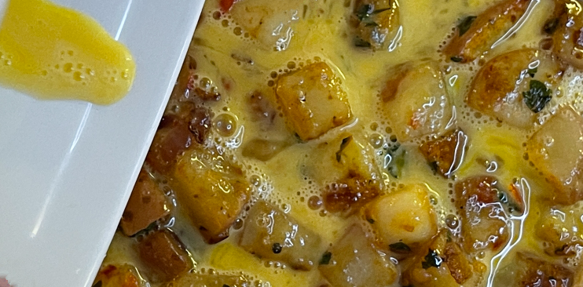
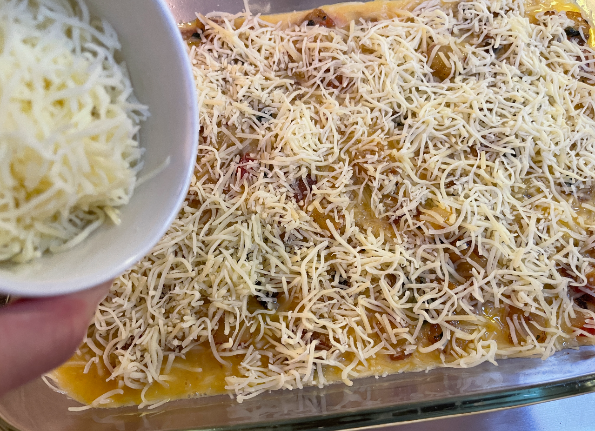

How to Make a Potato Frittata
By Kristin Wolf
Step 1: Gather Your Ingredients
List ingredients, use unordered list.

Step 2: Prepare Vegetables
Chop vegetables

Step 3: Prepare Eggs
Crack eggs into bowl. Wisk eggs. Season with salt and pepper. Set aside.

Step 4:Sautee Vegetables
Heat two tbsp olive oil in saute pan over medium heat. Add onions and garlic, cook til soft. Add potatoes, sautee, add seasonings of your choice. Gently stir, add additional oil if needed, cook until potatoes are soft (approx 12 minutes). Add chopped greens, tomatoes, other veggies and stir. Cook additional 2 minutes.

Step 5: Layer ingrediencts in baking dish.
Spray a 9x13 glass baking dish with non-stick spray. Transfer sauteed vegetables to bottom of baking dish and spread evenly with a spoon to cover the bottom. Pour the egg mixture evenly over vegetables, gently spoon egg mixture over any vegetables that haven't been glazed.

Step 6: Top with Cheese
Cover mixture evenly with 1/2-1 cup shredded cheese of your choice.

Step7: Bake in Oven
Bake on middel rack of 400 degree oven for 10-12 minutes, or until cheese is melted and center is soft but cooked through.
Let rest on rack or top of stove to cool for two to three minutes before slicing to serve. Garnish with hot sauce, sour cream, your favorite salsa or condiment.
Step 8: Enjoy Your Frittata!
Frittata is a healthy and tasty, protein-rich, comfort food, and can be enjoyed for breakfast, lunch, or dinner. Refridgerate leftovers and reheat in microwave or toaster oven. Should stay fresh 2-3 days in fridge.

Fritatta History and More Recipes
People all over the world have been enjoying versions of Frittatas for centuries.
Link to History: https://www.kitchenproject.com/history/Fritatta/index.htm